Вопросы
-
Открытое, закрытое и защищённое наследование
-
Виртуальные функции и позднее связывание и считывание строки символов
-
Дружественные функции и классы
-
Шаблонные классы
-
Перегруженные операторы
-
Итераторы
Наследование
-
Класс может наследовать особенности функционирования и структуру другого класса
-
Производный класс наследует члены своего базового класса
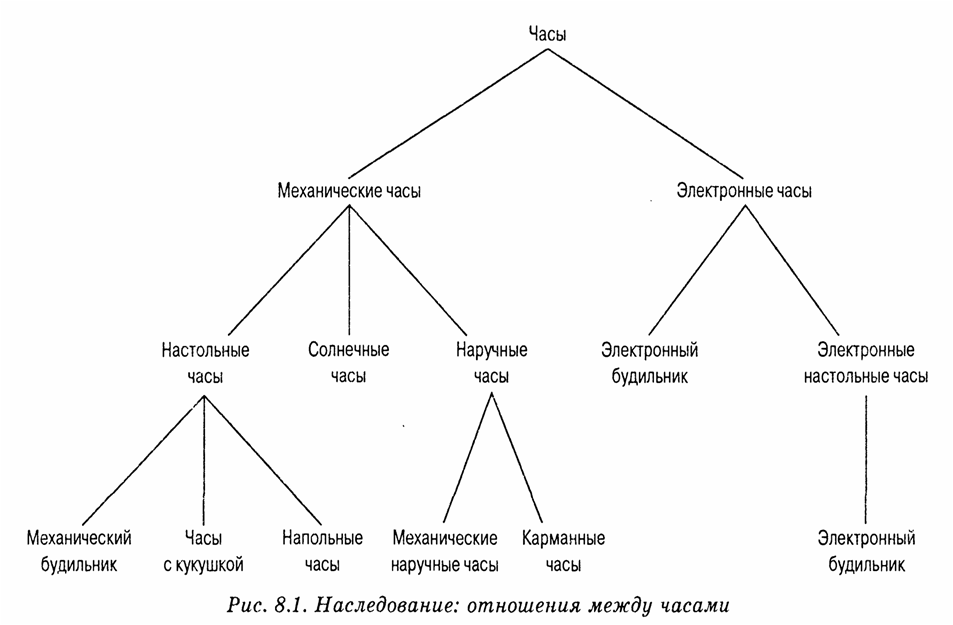
-
Наследование позволяет использовать существующие классы
-
Наследование облегчает добавление новых свойств к существующему объекту
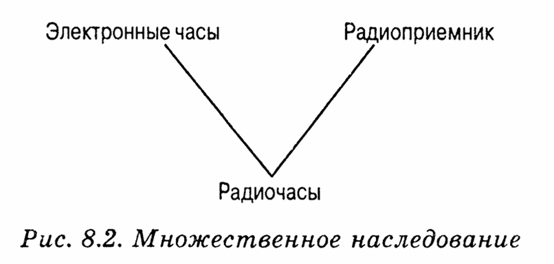
Наследование облегчает добавление новых свойств к существующему объекту
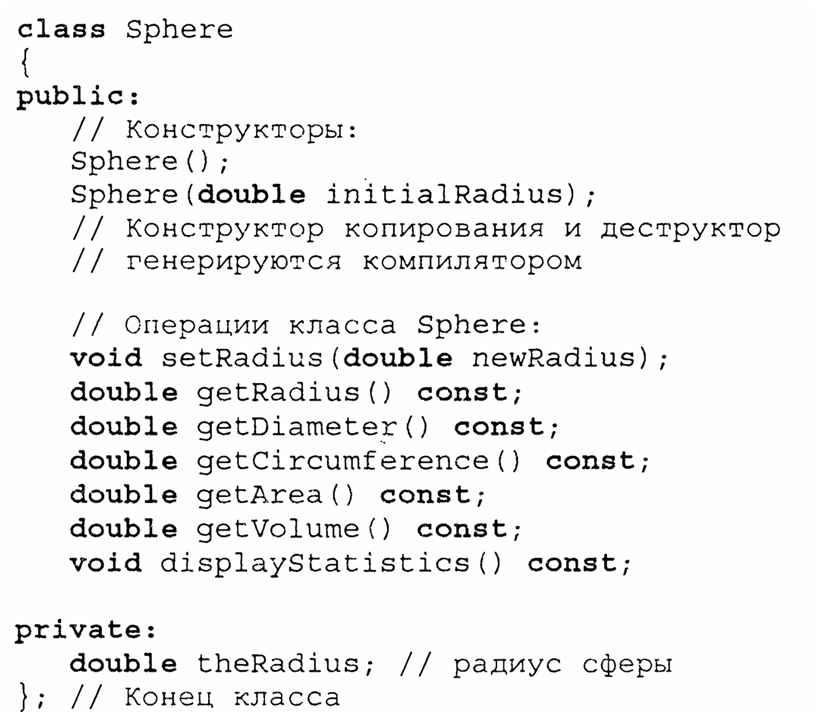
-
Производный класс может содержать новые члены, кроме наследуемых
-
Производный класс может переопределять унаследованную функцию-член базового класса
-
Экземпляр производного класса обладает всеми свойствами базового класса
-
Производный класс наследует закрытые члены базового класса, но не имеет к ним прямого доступа
-
Функции-члены производного класса могут вызывать открытые функции-члены базового класса
Производный класс «Ball» наследует члены базового класса «Sphere», а также переопределяет и добавляет новые функции-члены
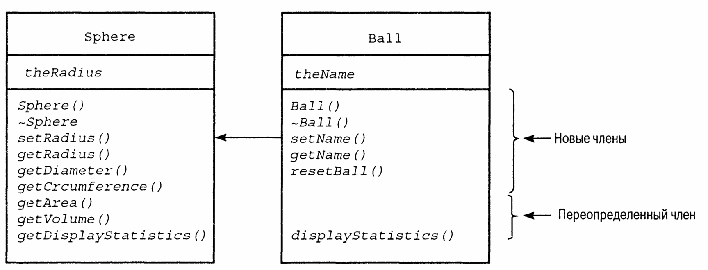
Дополнительные функции-члены класса «Ball» реализуются следующим образом
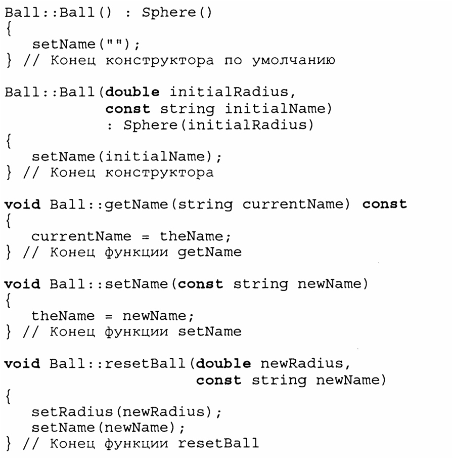
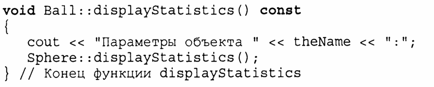
Открытые, закрытые и защищённые разделы класса
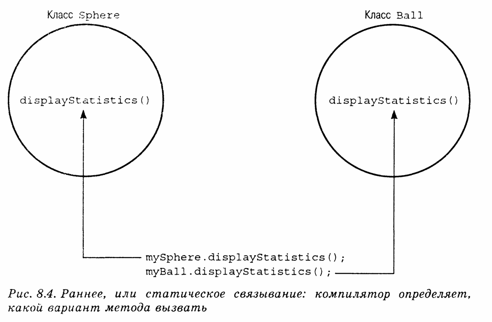
Доступ к открытым, закрытым и защищённым разделам класса из клиента и производного класса
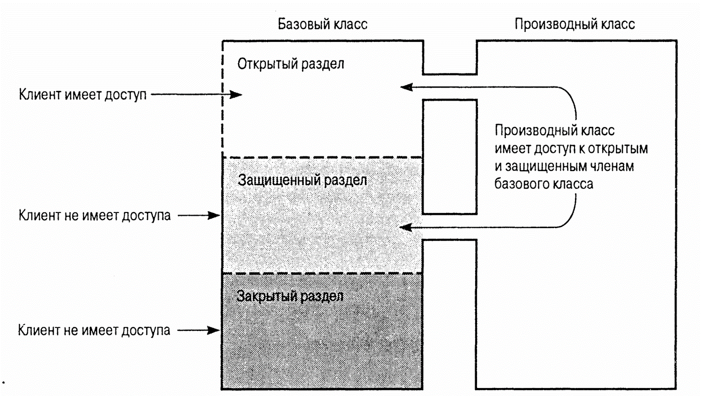
Категории членов класса
-
Открытые члены доступны всем,
-
Закрытые члены доступны только функциям-членам класса и его друзьям,
-
Защищённые члены доступны только функциям-членам базового и производных классов и их друзьям.
Виды наследования
-
Открытое наследование (открытые и защищённые члены базового класса остаются соответственно открытыми и защищёнными членами производного класса),
-
Защищённое наследование (открытые и защищённые члены базового класса становятся защищёнными членами производного класса),
-
Закрытое наследование (Открытые и защищённые члены базового класса становятся закрытыми членами производного класса. Во всех случаях закрытые члены базового класса остаются закрытыми и недоступными из производных классов).
Отношения «является», «содержит» и «подобен»
-
Открытое наследование определяет отношение «является»,
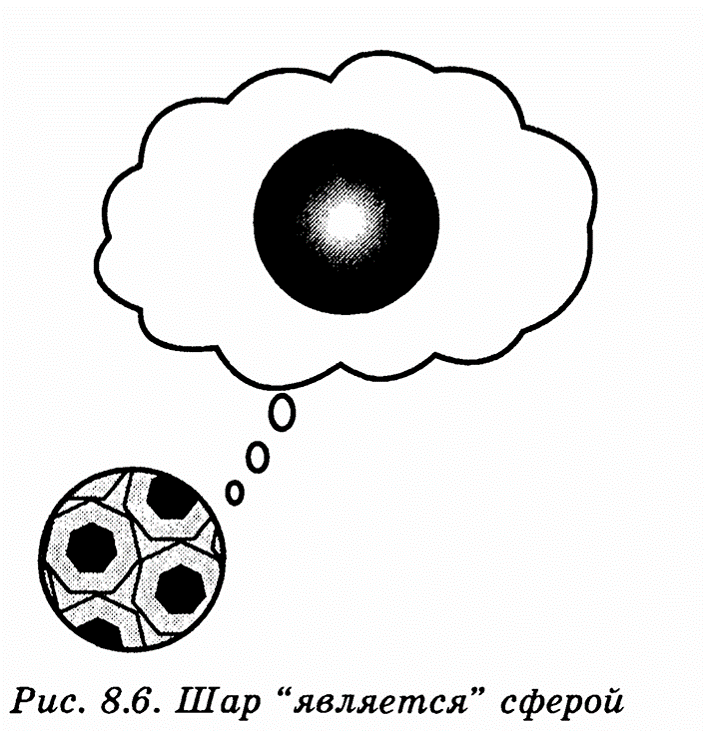
-
Отношение «содержит»
-
Между классами нет отношения «является» — открытое наследование применять не следует,
-
Отношение «содержит» («включение») означает, что некий класс содержит в качестве члена объект другого класса,
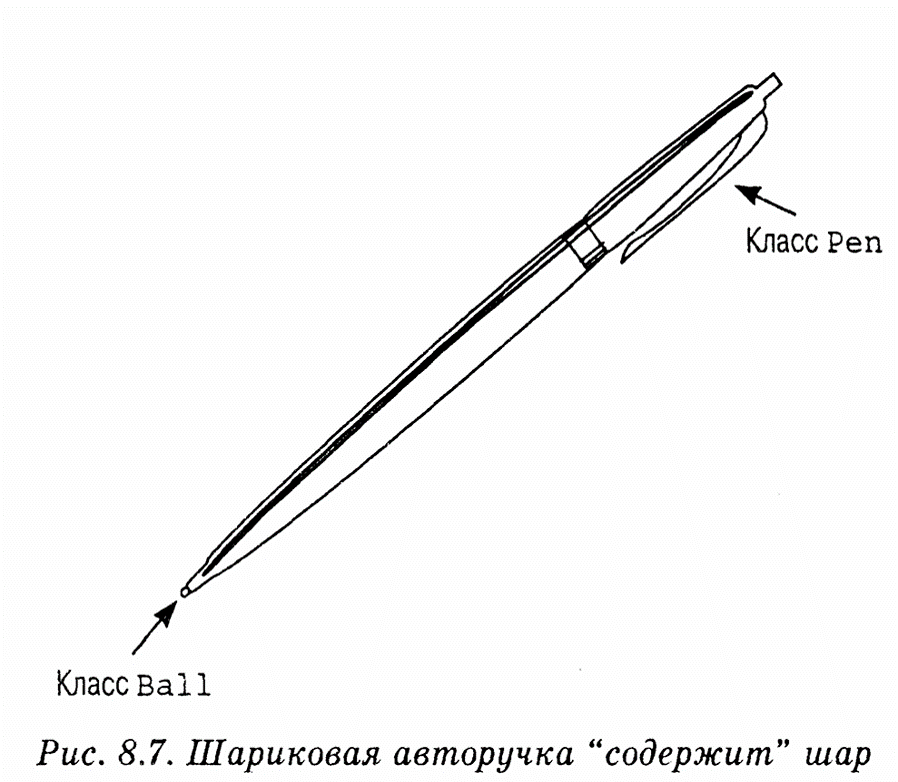
-
Отношение «подобен»
-
Отношения между классами «Stack» и «List»,
-
Используя закрытое наследование, абстрактный стек можно реализовать как список,
-
class Stack: private List,
-
Открытые и защищённые члены класса «List» станут закрытыми членами класса «Stack»,
-
Таким образом, в реализации класса «Stack» элементами стека можно манипулировать с помощью методов класса «List»,
-
Однако ни наследники, ни клиенты класса «Stack» не имеют доступа к членам класса «List», следовательно, список, лежащий в основе чтека, скрыт от его клиентов.
Виртуальные функции и позднее связывание
Раннее связывание может породить проблемы. Рассмотрим в качестве примера объявление
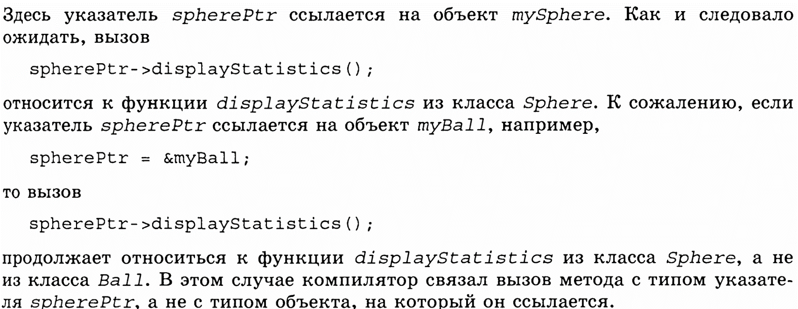
Механизм виртуальных функций (virtual functions)
Описание класса «Sphere»
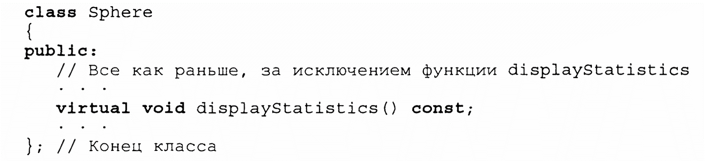
Позднее связывание означает, что правильная версия функции-члена выбирается в ходе выполнения программы
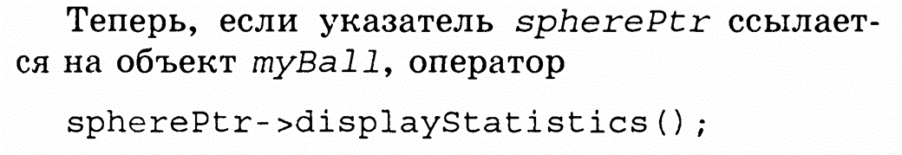
Эта ситуация называется поздним (late), или динамическим (dynamic), связыванием, а вызываемая функция — полиморфной (polymorphic). Полиморфизм (буквально "много форм") позволяет выбирать вызываемую функцию в ходе выполнения программы.
Виртуальную функцию можно замещать
-
Если функция-член базового класса является виртуальной, она считается виртуальной в любом производном классе,
-
Если класс содержит виртуальные функции, он является расширяемым.
Виртуальные функции
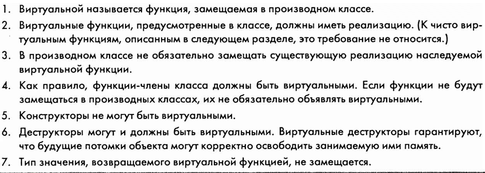
Абстрактные базовые классы
-
Чисто виртуальная функция не имеет тела,
-
Класс, содержащий хотя бы одну чисто виртуальную функцию, называется абстактным базовым классом.
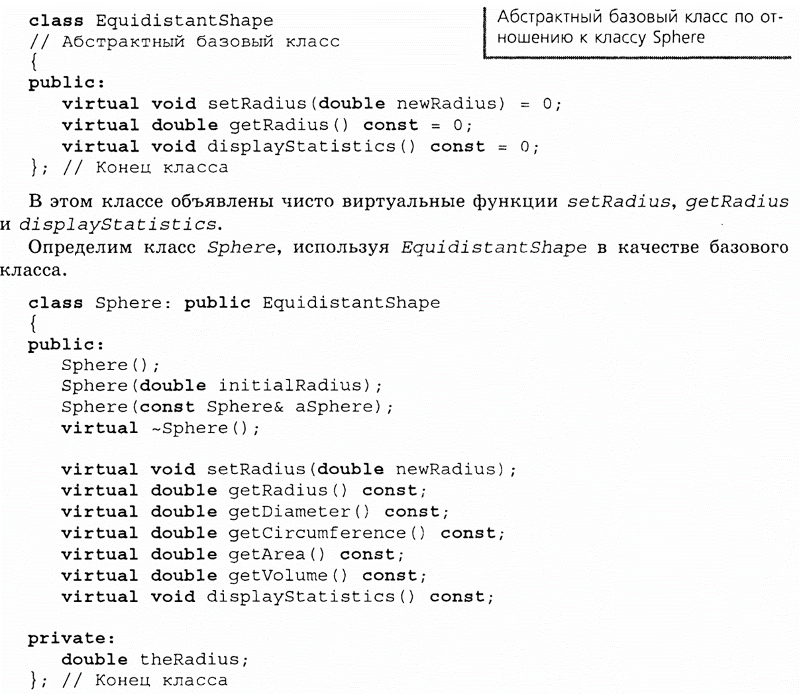
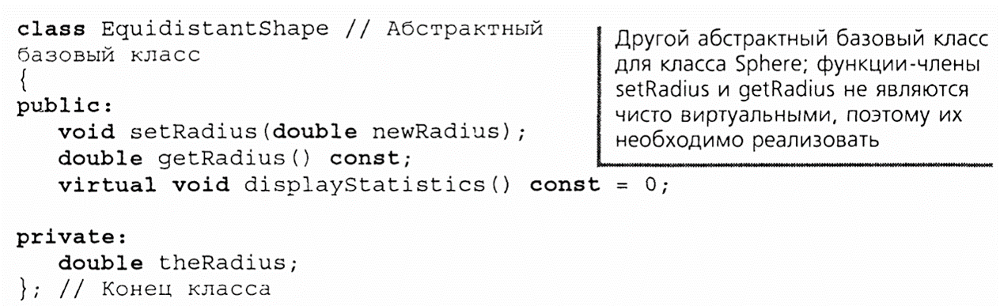
Абстрактный базовый класс
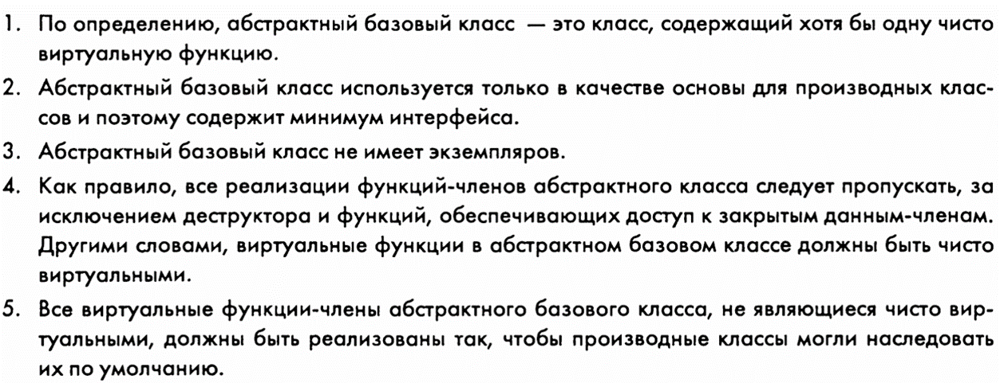
Дружественные функции и классы
-
Функции и классы могут быть друзьями класса
-
Функции, дружественные по отношению к классу «Sphere»
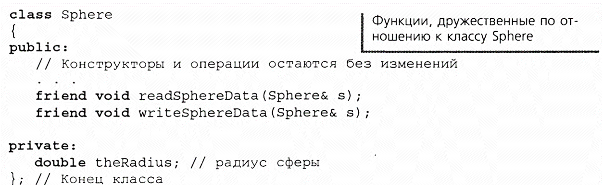
Дружественные функции не являются членами класса «Sphere»
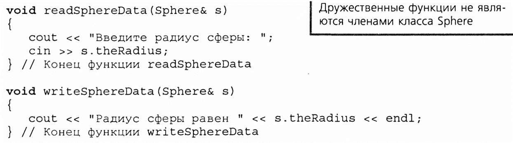
Дружественный класс — это класс, являющийся другом другого класса
Объявляя некий класс другом класса «С», мы открываем всем его функциям-членам доступ к закрытым и защищённым членам класса «С», это особенно полезно, когда один класс использует реализацию другого,
Например, реализация абстрактного типа данных в виде связанного списка предполагает, что в каждом узле содержится закрытый раздел. Узел можно реализовать в виде отдельного класса, объявив класс, реализующий абстрактный тип данных, его другом.
Определение узла абстрактного списка
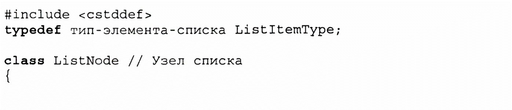
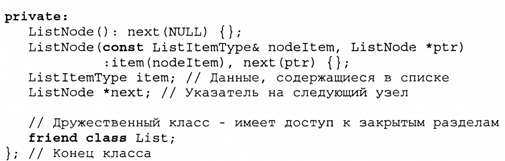
Класс «List» является другом класса «ListNode».
Друзья базового класса не являются друзьями производного класса
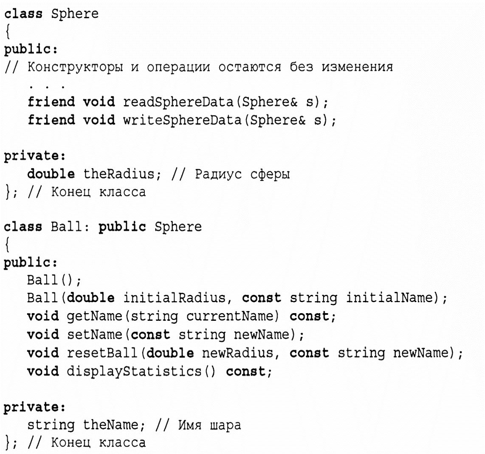
Друзья
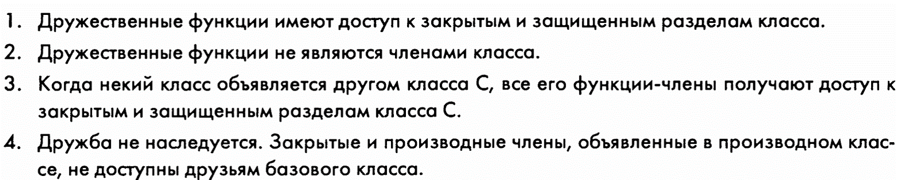
Новая реализация абстрактного и упорядоченного списка
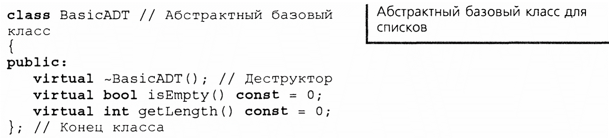
Приведённый ниже класс, реализующий абстрактный список, открыто наследует свойство базового класса
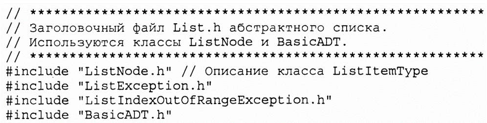
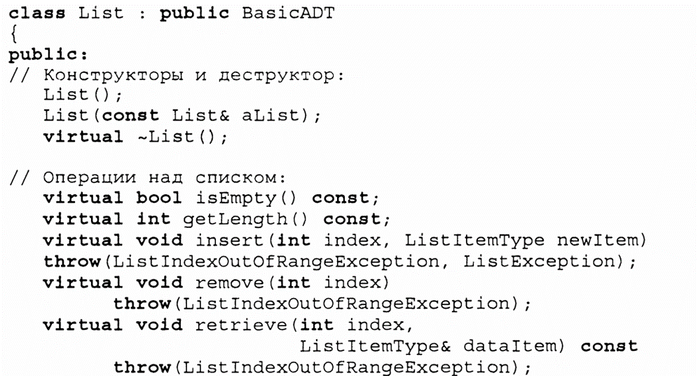
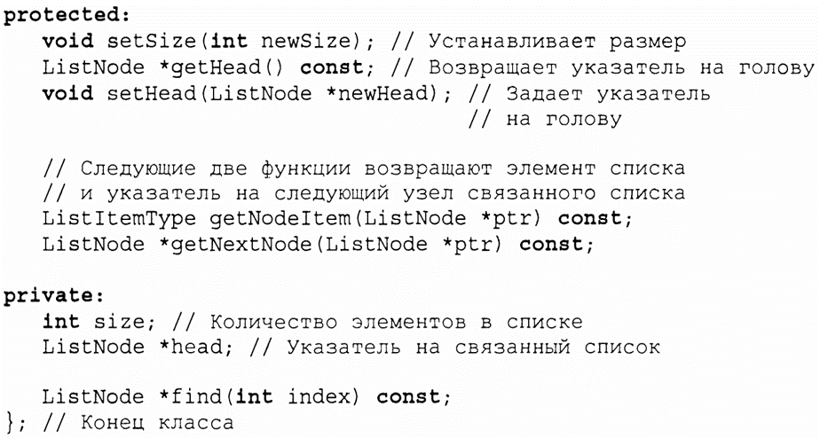
Защищённые функции-члены открывают производному классу доступ к закрытым данным-членам
-
Поскольку в классе «List» данные-члены «size» и «head» являются закрытыми, доступ к ним имеют лишь члены этоо класса.
Реализация абстрактного упорядоченного списка на основе абстрактного списка
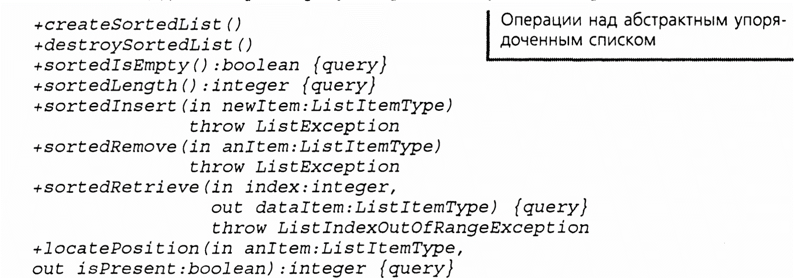
Класс «List» можно повторно использовать для создания класса «SortedList».
Отношение «является» предполагает открытое наследование
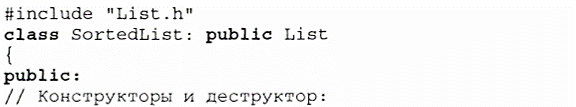
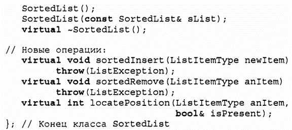
Реализация функций-членов класса «SortedList» имеет следующий вид
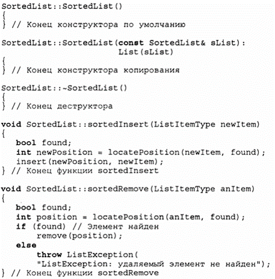
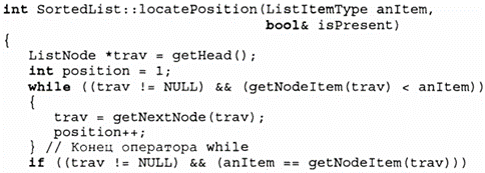
Для доступа к структуре данных, лежащей в основе списка, следует применять защищённые функции-члены класса «List».
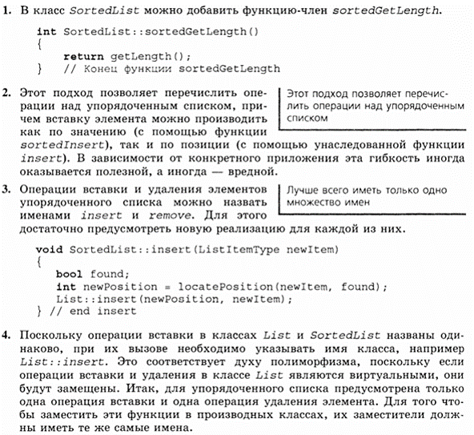
Упорядоченный список содержит список
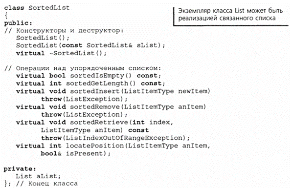
Необходимо реализовать конструктор, конструктор копирования, деструктор и каждый метод данного класса
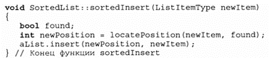
Член «aList» класса «SortedList» является экземпляром класса «List», обозначение «aList», «insert» обозначает вызов операции вставки из класса «List».
Упорядоченный список «подобен» списку
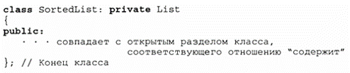
Шаблонные классы
-
Тип данных в шаблонном классе задаётся с помощью параметров,
-
Фактический тип данных задаётся клиентом при объявлении экземпляра шаблонного класса,
-
Реализацию шаблонного класса не следует компилировать отдельно от клиентской программы,
-
Преобразование обычных классов в шаблонные не представляет труда.
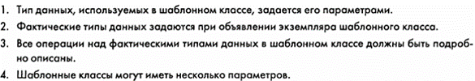
Перегруженные операторы
-
Перегруженный оператор может иметь несколько значений,
-
Два списка эквивалентны, если они имеют одинаковую длину и содержат одинаковые элементы,
-
Оператор присваивания сначала должен удалить объект «aList», то есть объект, стоящий в левой части,
-
Повышайте надёжность оператора присваивания, проверяя особые сиутации.
Принципы перегрузки операторов
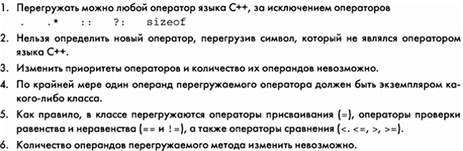
Итераторы
Итератор — это объект, который может перемещаться по коллекции аналогичных объектов.
Операции над итераторами
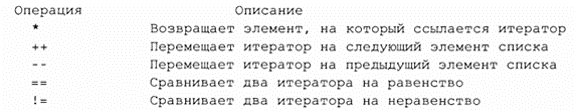
Резюме
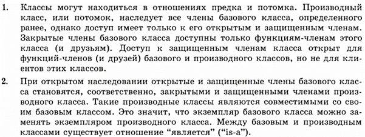
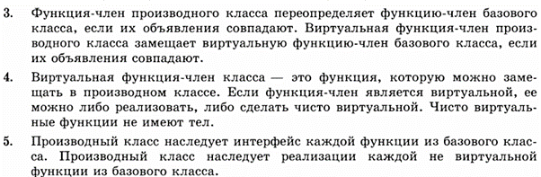
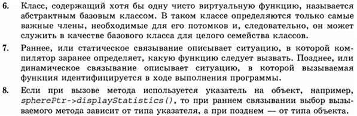
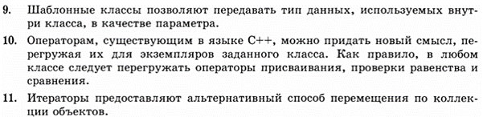
Предупреждения
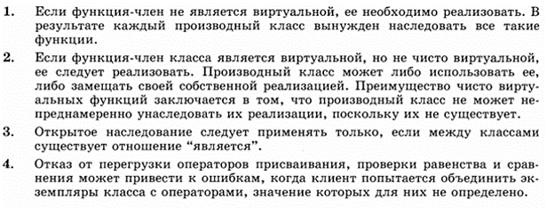